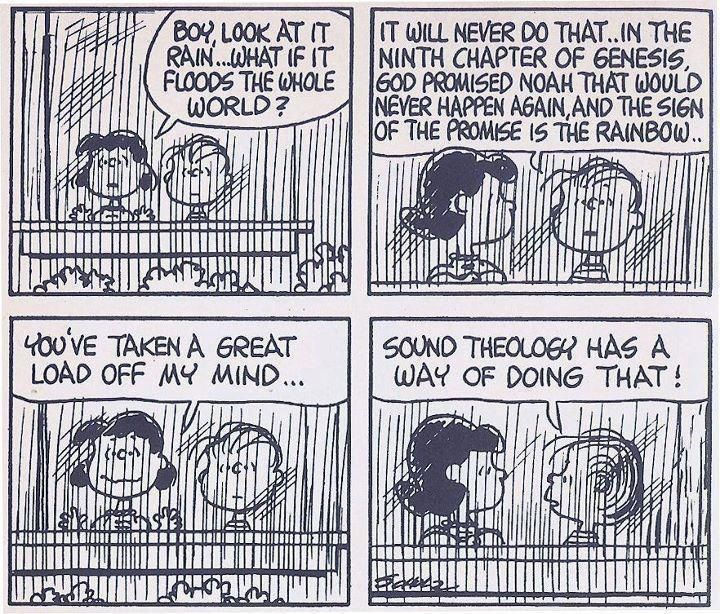

Created: 2020-10-26 Mon 14:34

Given an understanding of the modern period beginning with the Reformation:
What does the following quote mean:
All histories, including the history of Christian theology, rest on the interplay between remembering and forgetting." (xxiv)
The limits to our perspective (on things) is sometimes vast:
Placher sets parameters for his text:
Created by Dale Hathaway.